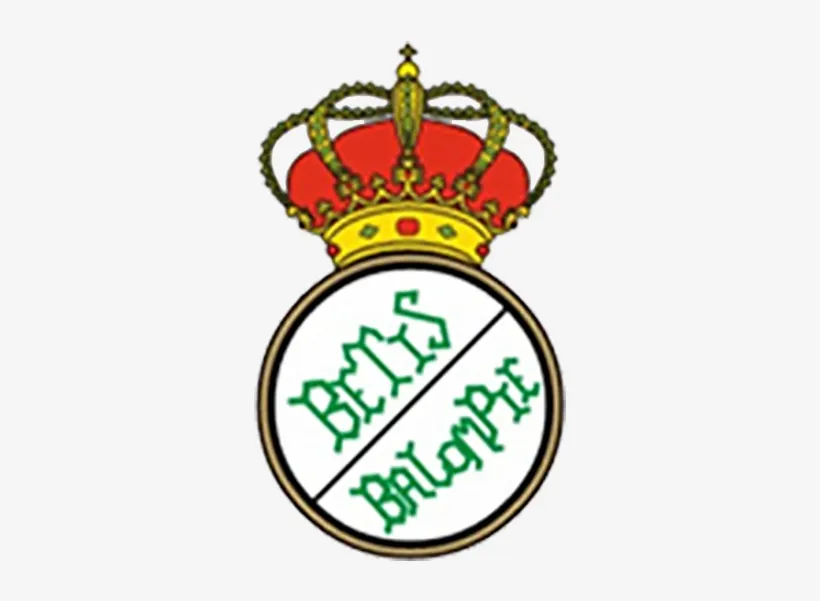
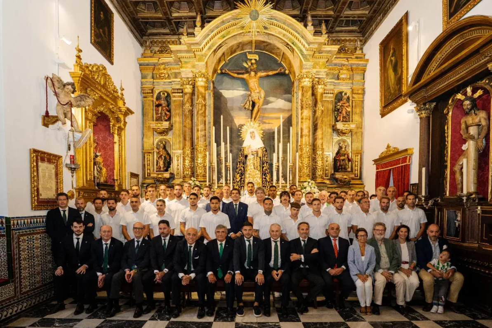

Real Betis Balompié
Historia del Club
El Real Betis Balompié, fundado en 1907 en Sevilla, es uno de los clubes históricos del fútbol español. Conocido por su afición apasionada, los béticos o verdiblancos el equipo ha vivido grandes momentos en su campo el Benito Villamarin como su debut en la champions league en 2005 o la celebracion de su centenario en el año 2007 contra el AC Milan tambien logro varios titulos aunque el mas importante es ganar La Liga en 1935 o su ultima copa del rey ganada en el año 2022

Últimos partidos
- Betis 3-5 Barcelona
- Torrent 1-4 Betis
- Sevilla 0-2 Betis
Tabla de Títulos
| Competición | Títulos |
|---|---|
| Primera División | 1 |
| Segunda División | 7 |
| Copa del Rey | 3 |
Plantilla 25/26
Imagen de la plantilla del Betis
